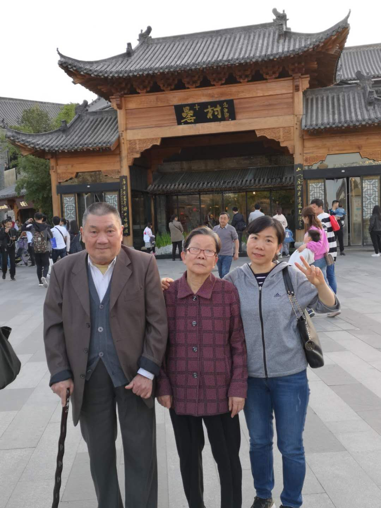

厚谊附饴含，从前雅嗜枣梨，辱赐宠言蒙眷爱
深恩承岳戴，此后傥闻丝竹，缅怀往事益欷歔
由衷地感谢您访问本页面，外祖父高大道先生于公元2021年2月17日辞世，膝下儿女众多，皆悲痛不已。作为晚辈，蒙受外祖父多年养育之恩，无法用言语表达感恩之情，仅以自己微薄之力，建立此页面，供您吊唁与缅怀高大道先生。
因鄙人技术能力有限，本页面尚在建设中，后期将会逐渐加入更多功能，帮助您更好地表达哀思，也感谢您给与我的耐心与宽容。
慈爱的天父，感谢您赐下这个机会，让我得以与您亲近，感谢您预备我的心在这里向您祈求和祷告，您是全知的，您是大能的，请容许我在您的存在前为我逝去的外祖父祷告。主啊，我祈求您赐福于我的外祖父，外祖父一生贫苦且多艰，但为人坚强，正直。他是一个爱国者，他将自己的青春奉献给了伟大祖国的建设，也见证了这个国家的风雨与兴衰。他是一个伟大的丈夫和慈父，与外祖母共同度过大半个世纪的时光，共同克服了无数生活的苦难，相伴一生，膝下儿女众多，都事业有成，家庭和睦，孝顺长辈。他是一个普通的人，并没有惊天动地的伟业，但他和我，和我的父母，和他许许多多流淌着他血液，受他养育之恩的子女及晚辈，以及那千千万万平凡但却热爱着生活的中国人一样，他是一个好人，是一个善良的人，但最重要是，他是我唯一且无法替代的外祖父。我感恩您赐予他这一生，无论坎坷与顺利，无论精彩与平淡，也感恩您赐予他平静的离去，让他的灵魂无需再继续承受老去的躯体的病痛。我不想过多地表达悲痛，因为逝者的离去不应成为生者长久的负担，我想外祖父在天之灵一定也在保佑我们继续幸福地生活下去。我更希望表达喜悦，为外祖父的一生而喜悦，为他对这个家庭的付出而喜悦，为他在我们每个人生命中扮演的重要的角色和带给我们无法释怀的回忆而喜悦，因为他的存在，才使得我们每个人都获得继续前行的意义。慈爱的天父，我再次祈求您赐予外祖父您莫大的福音，容许他升入天堂，与您同行，在您永恒荣光的庇佑下，远离寒冷，远离疾病，远离孤寂，远离一切的悲痛；在那充满温暖，充满希望，充满富足与幸福，充满爱与慈悲的港湾，静静地睡去，永远地安眠，直到未来您将我们也唤去的那一天，再次与他重逢。奉主耶稣基督的圣名，阿门。